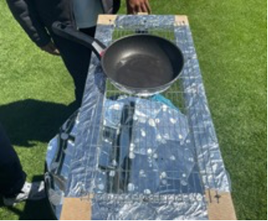
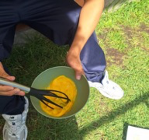
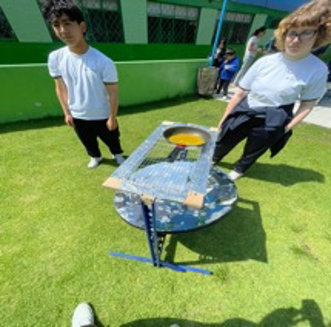
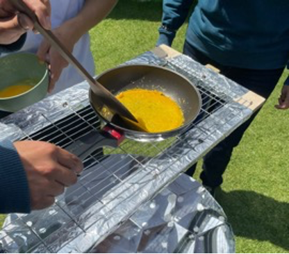
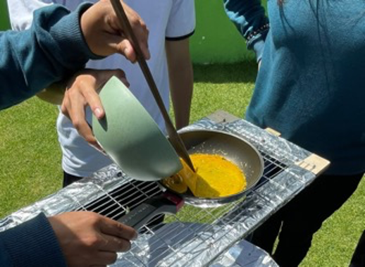
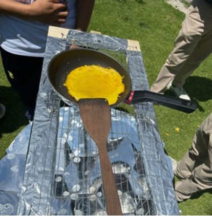
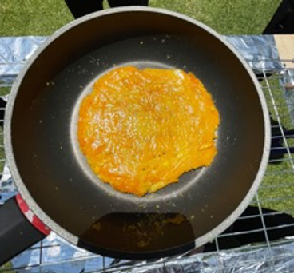

La cocina solar parabólica es un prototipo que utiliza la energía del sol para cocinar alimentos de forma ecológica y económica.
Su diseño parabólico concentra los rayos solares en un punto específico generando calor sin necesidad de gas ni electricidad.
Este proyecto promueve el uso de energías renovables el reciclaje de materiales y el cuidado del medio ambiente demostrando una alternativa sostenible para el futuro.
Funcionamiento de la Cocina Solar
La cocina solar parabólica funciona reflejando los rayos del sol mediante espejos colocados sobre una superficie curva. Estos rayos se concentran en un punto focal donde se coloca el recipiente con el alimento. Gracias a esta concentración de energía, se genera calor suficiente para cocinar sin utilizar combustibles ni electricidad.
Propósito
El propósito de este proyecto es demostrar que la energía solar puede ser utilizada como una fuente de energía renovable para la cocción de alimentos, promoviendo el cuidado del medio ambiente y el uso responsable de los recursos naturales.
Objetivos
Diseñar y construir una cocina solar parabólica.
Investigar el funcionamiento de la energía solar.
Concentrar rayos solares en un punto focal.
Reducir el uso de combustibles fósiles.
Actividades Clave
Construcción de la estructura.
Preparación de la superficie.
Pintado de la antena.
Unión de la estructura.
Colocación de espejos reflectantes.
Beneficios de la Cocina Solar
Reduce la contaminación ambiental.
Aprovecha una fuente de energía renovable.
Disminuye el uso de combustibles fósiles.
Promueve el reciclaje y la sostenibilidad.
Materiales Utilizados
Antena parabólica reutilizada
Espejos reflectantes
Pintura negra
Soporte metálico
Sartén de teflón
Huevos
Estructura de Costos
Material
Costo
Antena parabólica reciclada
$0.00
12 Espejos
$13.00
Pintura negra y azul
$3.00+$3.00=
$6.00
Soporte de aluminio y accesorios
$0.00
Mano de Obra
$10.00
Total
$29.00
Bitácora Fotográfica

1. Preparación del prototipo
Se coloca el sartén en la cocina para que siga calentándose.

2. Batir el primer huevo
Se bate el huevo y se coloca en el sartén de teflón.

3. Colocar el huevo en la sartén
Se bate el huevo y se coloca en el sartén de teflón.

4. Primera vuelta
Se da la vuelta después de 15 minutos.

5. Añadir segundo huevo
Se añade el segundo huevo batido.

6. Segunda vuelta
Se da la segunda vuelta después de 15 minutos.

7. Cocción final
La tortilla queda completamente cocida.
Proceso de Cocción
Resultado Final
Tiempo
Temperatura
0 min
28 °C
15 min
52 °C
30 min
74 °C
45 min
95 °C
60 min
105 °C
Análisis de Resultados
Los datos registrados muestran un incremento constante de la temperatura durante toda la práctica.
La cocina solar parabólica alcanzó temperaturas superiores a los 100 grados centígrados gracias a la concentración de los rayos solares.
Registro de Datos de la Práctica
Etapa del proceso
Hora
Temperatura
Observación
Inicio del calentamiento
10h20
80 °C
La cocina solar comenzó a recibir radiación solar directa.
Preparación de la sartén
10h30
85 °C
La sartén alcanzó una temperatura adecuada para iniciar la práctica.
Colocación del huevo
10h40
92 °C
Se agregó la mezcla para la tortilla de huevo.
Cocción inicial
10h50
98 °C
Se observó el primer cambio de textura y color.
Cocción intermedia
11h00
104 °C
La tortilla continuó cocinándose de manera uniforme.
Resultado final
11h20
110 °C
La tortilla alcanzó su punto final de cocción.
Resumen de la Práctica
Dato
Valor
Producto utilizado
Tortilla de huevo
Hora de inicio
10h20
Hora de finalización
11h20
Tiempo total
1 hora
Temperatura inicial
80 °C
Temperatura máxima
110 °C
Incremento de temperatura
30 °C
Condición de trabajo
Exposición directa al sol
Tipo de prototipo
Cocina solar parabólica
Conclusiones
La cocina solar parabólica demostró ser una alternativa ecológica y funcional para cocinar alimentos utilizando únicamente la energía solar.
Durante el experimento se comprobó que la temperatura aumentó progresivamente hasta alcanzar niveles adecuados para la cocción de una tortilla de huevo.
El proyecto permitió aplicar conocimientos de matemáticas, ciencias y sostenibilidad, fomentando el uso de energías renovables y el cuidado del medio ambiente.
Fuentes de Trabajo
Investigación sobre energía solar.
Información sobre cocinas solares parabólicas.
Observaciones realizadas durante el proyecto.
Datos obtenidos durante la cocción de la tortilla de huevo.